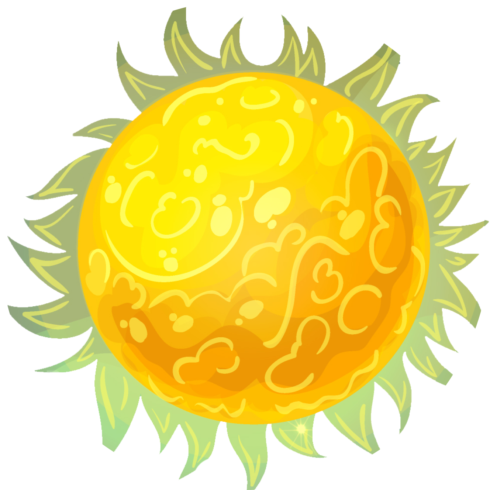

Atlas is a website created to provide information about our solar
system. Starting from the names of the planets, to the core info of
the planet itself .Apart from that, Atlas is a website created for the
purpose of learning and training the level of understanding of website
development and to complete the submissions given by dicoding's team.
This website was created by SenJu also known as S. Raj Karan. The
website I have made is not perfect, so I would appreciate any feedback
or advice you guys can provide. Sincerely, thank you ^_^
About SOLAR SYSTEM
The Solar System is the gravitationally bound system of the Sun and the
objects that orbit it. It formed 4.6 billion years ago from the
gravitational collapse of a giant interstellar molecular cloud. The vast
majority (99.86%) of the system's mass is in the Sun, with most of the
remaining mass contained in the planet Jupiter. The four inner system
planets—Mercury, Venus, Earth and Mars—are terrestrial planets, being
composed primarily of rock and metal. The four giant planets of the
outer system are substantially larger and more massive than the
terrestrials. The two largest, Jupiter and Saturn, are gas giants, being
composed mainly of hydrogen and helium; the next two, Uranus and
Neptune, are ice giants, being composed mostly of volatile substances
with relatively high melting points compared with hydrogen and helium,
such as water, ammonia, and methane. All eight planets have nearly
circular orbits that lie near the plane of Earth's orbit, called the
ecliptic.
The SUN

The Sun is the star at the center of the Solar System. It is a nearly
perfect ball of hot plasma, heated to incandescence by nuclear fusion
reactions in its core, radiating the energy mainly as visible light,
ultraviolet, and infrared radiation. It is the most important source
of energy for life on Earth. The Sun's diameter is about 1.39 million
kilometers (864,000 miles), or 109 times that of Earth. Its mass is
about 330,000 times that of Earth, comprising about 99.86% of the
total mass of the Solar System. Roughly three-quarters of the Sun's
mass consists of hydrogen (~73%); the rest is mostly helium (~25%),
with much smaller quantities of heavier elements, including oxygen,
carbon, neon, and iron.
The Closest Planet to The Sun MERCURY
Mercury is the smallest planet in the Solar System and the closest to
the Sun. Its orbit around the Sun takes 87.97 Earth days, the shortest
of all the Sun's planets. It is named after the Roman god Mercurius
(Mercury), god of commerce, messenger of the gods, and mediator
between gods and mortals, corresponding to the Greek god Hermes
(Ἑρμῆς). Like Venus, Mercury orbits the Sun within Earth's orbit as an
inferior planet, and its apparent distance from the Sun as viewed from
Earth never exceeds 28°. This proximity to the Sun means the planet
can only be seen near the western horizon after sunset or the eastern
horizon before sunrise, usually in twilight. At this time, it may
appear as a bright star-like object, but is more difficult to observe
than Venus. From Earth, the planet telescopically displays the
complete range of phases, similar to Venus and the Moon, which recurs
over its synodic period of approximately 116 days
Earth's Solar System Twin VENUS
Venus is the second planet from the Sun and is named after the Roman
goddess of love and beauty. As the brightest natural object in Earth's
night sky after the Moon, Venus can cast shadows and can be visible to
the naked eye in broad daylight. Venus's orbit is smaller than that of
Earth, but its maximal elongation is 47°; thus, at latitudes with a
day-night cycle, it is most readily visible for up to a few hours
following the start of sunset or before sunrise. At times, it has been
seen in a completely dark sky. Venus orbits the Sun every 224.7 Earth
days. It has a synodic day length of 117 Earth days and a sidereal
rotation period of 243 Earth days. Consequently, it takes longer to
rotate about its axis than any other planet in the Solar System, and
does so in the opposite direction to all but Uranus. This means that
the Sun rises from its western horizon and sets in its east. Venus
does not have any moons.
Our Home Planet EARTH
Earth is the third planet from the Sun and the only astronomical
object known to harbor life. While large volumes of water can be found
throughout the Solar System, only Earth sustains liquid surface water.
About 71% of Earth's surface is made up of the ocean, dwarfing Earth's
polar ice, lakes, and rivers. The remaining 29% of Earth's surface is
land, consisting of continents and islands. Earth's surface layer is
formed of several slowly moving tectonic plates, interacting to
produce mountain ranges, volcanoes, and earthquakes. Earth's liquid
outer core generates the magnetic field that shapes Earth's
magnetosphere, deflecting destructive solar winds. Earth's atmosphere
consists mostly of nitrogen and oxygen. More solar energy is received
by tropical regions than polar regions and is redistributed by
atmospheric and ocean circulation. Water vapor is widely present in
the atmosphere and forms clouds that cover the planet.
The Solar System Red Planet MARS
Mars is the fourth planet from the Sun and the second-smallest planet
in the Solar System, being larger than only Mercury. In the English
language, Mars is named for the Roman god of war. Mars is a
terrestrial planet with a thin atmosphere, and has a crust primarily
composed of elements similar to Earth's crust, as well as a core made
of iron and nickel. Mars has surface features such as impact craters,
valleys, dunes, and polar ice caps. It has two small and irregularly
shaped moons: Phobos and Deimos Some of the most notable surface
features on Mars include Olympus Mons, the largest volcano and highest
known mountain on any planet in the Solar System, and Valles
Marineris, one of the largest canyons in the Solar System. The
Borealis basin in the Northern Hemisphere covers approximately 40% of
the planet and may be a large impact feature.
The Largest Planet JUPITER
Jupiter is the fifth planet from the Sun and the largest in the Solar
System. It is a gas giant with a mass more than two and a half times
that of all the other planets in the Solar System combined, but
slightly less than one-thousandth the mass of the Sun. Jupiter is the
third brightest natural object in the Earth's night sky after the Moon
and Venus, and it has been observed since prehistoric times. It was
named after the Roman god Jupiter, the king of the gods. Jupiter is
primarily composed of hydrogen, but helium constitutes one-quarter of
its mass and one-tenth of its volume. It probably has a rocky core of
heavier elements, but, like the other giant planets in the Solar
System, it lacks a well-defined solid surface. The ongoing contraction
of Jupiter's interior generates more heat than it receives from the
Sun. Because of its rapid rotation, the planet's shape is an oblate
spheroid: it has a slight but noticeable bulge around the equator.
The Ringed Jewel Saturn
Saturn is the sixth planet from the Sun and the second-largest in the
Solar System, after Jupiter. It is a gas giant with an average radius
of about nine and a half times that of Earth. It has only one-eighth
the average density of Earth; however, with its larger volume, Saturn
is over 95 times more massive. Saturn's interior is most likely
composed of a core of iron-nickel and rock (silicon and oxygen
compounds). Its core is surrounded by a deep layer of metallic
hydrogen, an intermediate layer of liquid hydrogen and liquid helium,
and finally, a gaseous outer layer. Saturn has a pale yellow hue due
to ammonia crystals in its upper atmosphere. An electrical current
within the metallic hydrogen layer is thought to give rise to Saturn's
planetary magnetic field, which is weaker than Earth's, but which has
a magnetic moment 580 times that of Earth due to Saturn's larger size.
The Tilted Planet Uranus
Uranus is the seventh planet from the Sun. Its name is a reference to
the Greek god of the sky, Uranus, who, according to Greek mythology,
was the great-grandfather of Ares (Mars), grandfather of Zeus
(Jupiter) and father of Cronus (Saturn). It has the third-largest
planetary radius and fourth-largest planetary mass in the Solar
System. Uranus is similar in composition to Neptune, and both have
bulk chemical compositions which differ from that of the larger gas
giants Jupiter and Saturn. For this reason, scientists often classify
Uranus and Neptune as "ice giants" to distinguish them from the other
giant planets. As with gas giants, ice giants also lack a well defined
"solid surface." Uranus's atmosphere is similar to Jupiter's and
Saturn's in its primary composition of hydrogen and helium, but it
contains more "ices" such as water, ammonia, and methane, along with
traces of other hydrocarbons
The Stormy Blue Planet NEPTUNE
Neptune is the eighth planet from the Sun and the farthest known solar
planet. In the Solar System, it is the fourth-largest planet by
diameter, the third-most-massive planet, and the densest giant planet.
It is 17 times the mass of Earth, and slightly more massive than its
near-twin Uranus. Neptune is denser and physically smaller than Uranus
because its greater mass causes more gravitational compression of its
atmosphere. It is referred to as one of the solar system's two ice
giant planets (the other one being Uranus). Being composed primarily
of gases and liquids, it has no well-defined "solid surface". The
planet orbits the Sun once every 164.8 years at an average distance of
30.1 AU (4.5 billion km; 2.8 billion mi). It is named after the Roman
god of the sea and has the astronomical symbol ♆, representing
Neptune's trident.
The Edge of SOLAR SYSTEM
Past the Kuiper Belt is the very edge of the solar system, the
heliosphere, a vast, teardrop-shaped region of space containing
electrically charged particles given off by the sun. Many astronomers
think that the limit of the heliosphere, known as the heliopause, is
about 9 billion miles (15 billion km) from the sun. The Oort Cloud lies
well past the Kuiper Belt, considered to be located between 2,000 and
5,000 astronomical units (AU) from the sun. The outer edge of the Oort
Cloud may reach as far as 10,000 up to 100,000 AU from the sun. One AU
is equal to approximately 93,000,000 miles (150 million kilometers). The
Oort Cloud is home to billions, or even trillions of objects, according
to NASA Science(opens in new tab).